7 Modellfit
7.1 Residuen
7.2 Was sind noch mal Residuen \(\epsilon_i\) bzw. deren Schätzer \(\hat{\epsilon}_i = e_i\)
\[ y_i = \beta_0 + \beta_1 \times x_i + \epsilon_i \]

7.3 Annahme: \(\epsilon_i \sim \mathcal{N}(0, \sigma^2)\)
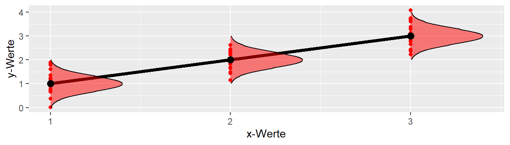
7.4 Übersicht Residuen
| Typ | Berechnung | Ziel |
|---|---|---|
| Einfache Residuen | \(e_i = y_i - \hat{y}_i\) | Verteilungsannahme |
| Standardisierte Residuen | \(e_{Si} = \frac{e_i}{\hat{\sigma}\sqrt{1-h_i}}\) | Verteilungsannahme |
| Studentized Residuen | \(e_{Ti} = \frac{e_i}{\hat{\sigma}_{(-i)}\sqrt{1-h_i}}\) | Einfluss auf Modell |
7.5 Residuen in R berechnen mit residuals() und Freunden
residuals(mod)[1:5] # einfache Residuen 1 2 3 4 5
-9.300928 -9.368288 -11.217658 -5.572108 -6.363565 rstandard(mod)[1:5] # standardisierte Residuen 1 2 3 4 5
-1.4592936 -1.4598906 -1.7440573 -0.8724351 -0.9916310 rstudent(mod)[1:5] # studentized Residuen 1 2 3 4 5
-1.4814779 -1.4821191 -1.7928881 -0.8697060 -0.9914135 7.6 Residuen in R inspizieren
y_hat <- predict(mod)
plot(y_hat, residuals(mod))
plot(y_hat, rstandard(mod))
plot(y_hat, rstudent(mod))7.7 Diagnoseplot - Einfache Residuen \(\hat{\epsilon_i} \sim \hat{y_i}\)
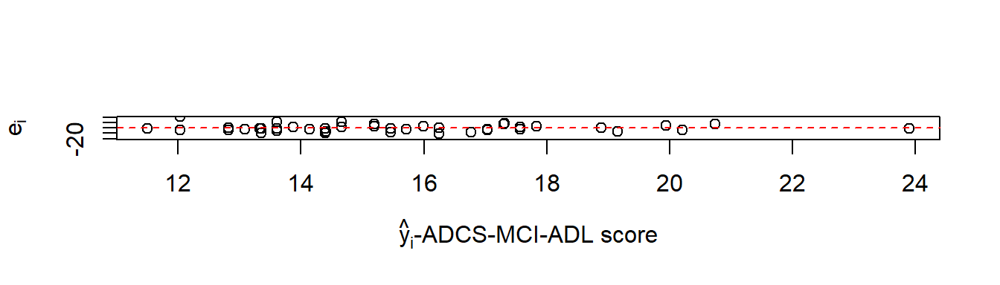
7.8 Diagnoseplot - Standardisierte Residuen \(\hat{\epsilon}_{Si} \sim \hat{y_i}\)
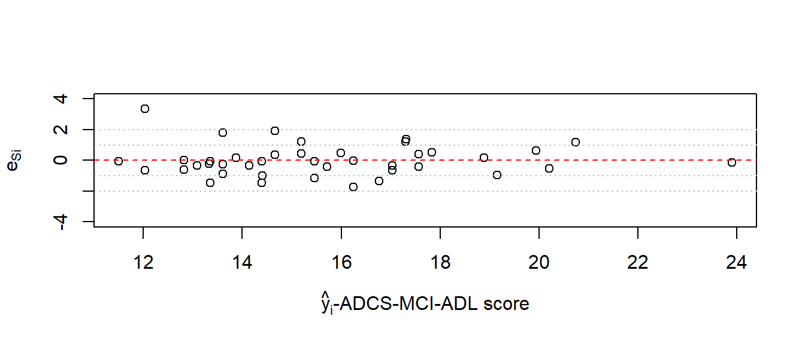
7.9 Diagnoseplot - Studentized Residuen \(\hat{\epsilon}_{Ti} \sim \hat{y_i}\)
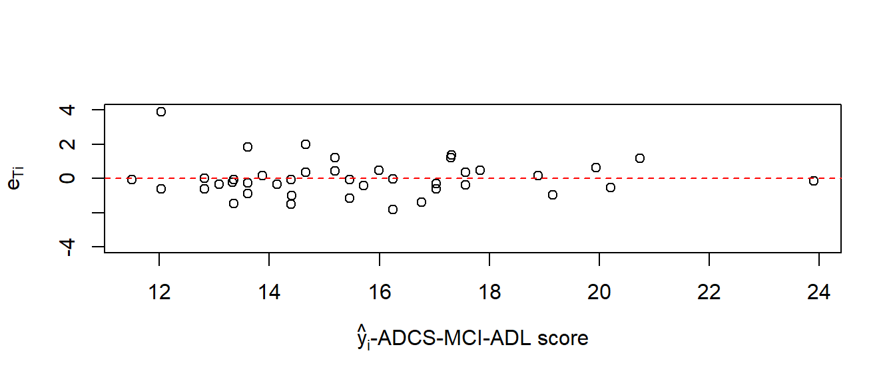
7.10 Diagnoseplot - Wie sehen Probleme aus?
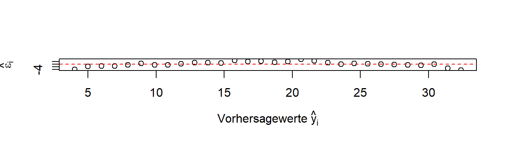
7.11 Diagnoseplot - Wie sehen Probleme aus?
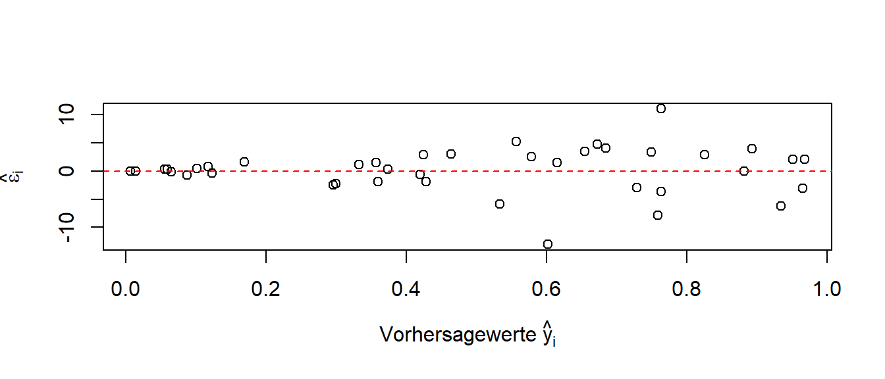
7.12 Wie kann die Verteilung der Residuen überprüft werden?
| y |
|---|
| -2.0 |
| 5.0 |
| -1.2 |
| 0.1 |
| 7.0 |
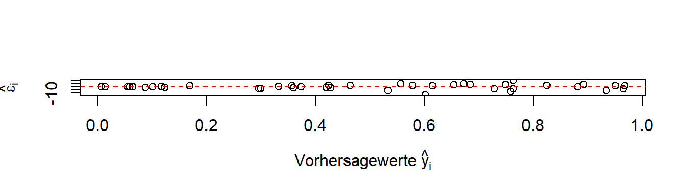
7.13 Konstruktion eines qq-Graphen
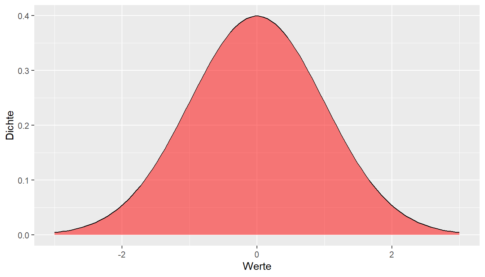
| kleinster | 2.kleinster | mittlerer | 2.größter | größter |
|---|---|---|---|---|
| -2 | -1.2 | 0.1 | 5 | 7 |
7.14 Konstruktion eines qq-Graphen
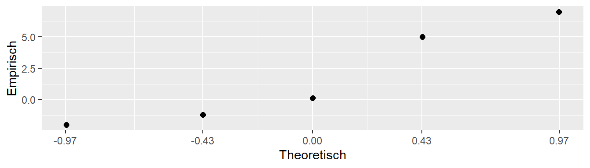
7.15 Beispiele für qq-Graphen mit qqnorm() und qqline()
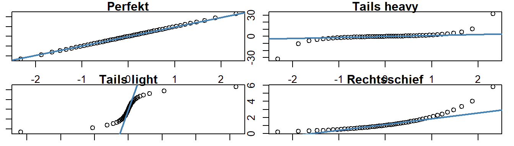
7.16 Diagnoseplot - QQ-Diagramm
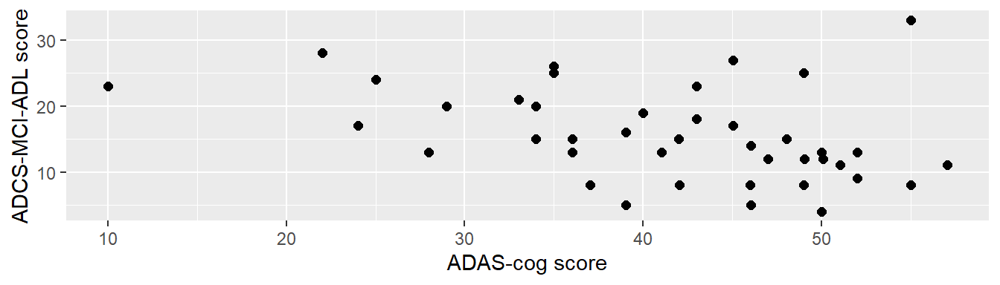
7.17 summary()
Call:
lm(formula = adcs ~ adas, data = adl)
Residuals:
Min 1Q Median 3Q Max
-11.2177 -3.8033 -0.4663 2.7950 20.9634
Coefficients:
Estimate Std. Error t value Pr(>|t|)
(Intercept) 26.5445 4.3052 6.166 3.05e-07 ***
adas -0.2638 0.1015 -2.599 0.0131 *
---
Signif. codes: 0 '***' 0.001 '**' 0.01 '*' 0.05 '.' 0.1 ' ' 1
Residual standard error: 6.516 on 39 degrees of freedom
Multiple R-squared: 0.1477, Adjusted R-squared: 0.1258
F-statistic: 6.757 on 1 and 39 DF, p-value: 0.013127.18 Neue Idee zu Residuen
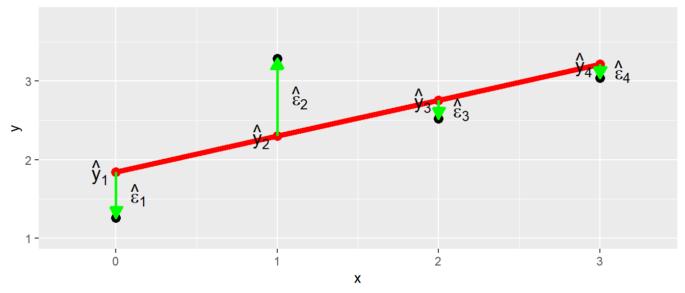
7.19 Zum Nacharbeiten
Kutner u. a. (2005, p.100–114) Altman und Krzywinski (2016b) Fox (2011, p.285–296)
7.20 Hebelwerte
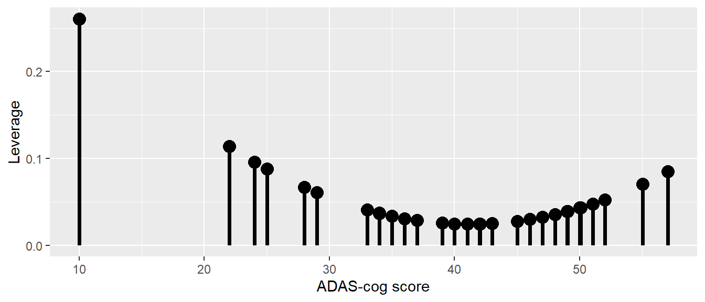
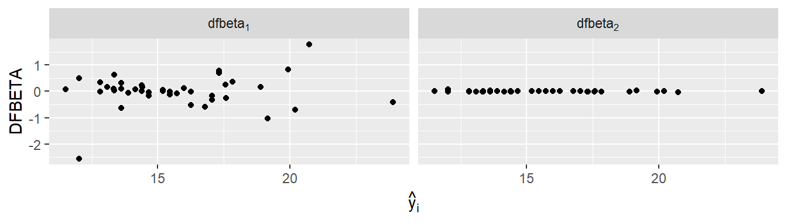
7.21 DFFITS
Mit Hilfe der Hebelwerte lassen sich verschiedene Maße erstellen um den Einfluss von Datenpunkten auf das Modell zu überprüfen. Ein Maß wird als bezeichnet (siehe Gleichung 7.1)
\[ (DFFITS)_i = \frac{\hat{y}_i - \hat{y}_{i(i)}}{\sqrt{\hat{\sigma}^2h_i}} \tag{7.1}\]
Im Zähler kommen vin Gleichung 7.1 zweimal vorhergesagte \(y\)-Werte vor. \(\hat{y}_i\) ist dabei der ganz normale Vorhersagewert der uns mittlerweile schon mehrfach begegnet ist. Der zweite Wert \(\hat{y}_{i(i)}\) bezeichnet den vorhergesagten Wert aus dem Modell aus dem der Wert \(y_i\) weggelassen wurde. D.h, dass Modell ist mit einem Wert weniger gefittet worden. Daher misst die Differenz \(\hat{y}_i - \hat{y}_{i(i)}\) den Unterschied in den Vorhersagewerte zwischen zwei Modellen bei denen einmal der Wert \(y_i\) zum fitten verwendet wurde und einmal wenn \(y_i\) nicht zum fitten verwendet wurde. Umso größer der Unterschied zwischen diesen beiden Werte umso größer ist der Einfluss des Wertes \(y_i\) auf den Modellfit. Den Nenner von Gleichung 7.1 lassen wir mal fallen, da es sich dabei nur um einen Normierungswert handelt. Dementsprechend, wird mittels DFFITS für jeden Datenpunkt ein Wert ermittelt und umso größer dieser Wert ist umso größer ist der Einfluss des jeweiligen Datenpunktes auf den Modellfit.
Im idealen Fall sollte alle Datenpunkt ungefähr den gleichen Einfluss haben und einzelne Datenpunkte die einen übermäßig großen Einfluss auf das Modell haben sollten noch einmal genauer inspiziert werden.
Als Daumenregel, kann für kleine bis mittlere Datensätze ein DFFITS von \(\approx 1\) auf Probleme hindeuten, während bei großen Datensätzen \(\approx 2\sqrt{k/N}\) als Orientierungshilfe verwendet werden kann (k := Anzahl der Prediktoren, N := Stichprobengröße).
Wenn ein Wert außerhalb der Daumenregel liegt, heißt das nicht, dass er automatisch ausgeschlossen werden muss/soll, sondern lediglich inspiziert werden sollte und das Modell mit und ohne diesen Wert interpretiert werden sollte.
In R können die DFFITS werden mittels der dffits()-Funktion berechnet werden. Als Parameter erwartet dffits() das gefittete lm()-Objekt. Ähnlich wie bei den Residuen, werden die DFFITS-Werte gegen die vorhergesagten \(y_i\)-Werte graphisch abgetragen um die Wert zu inspizieren und Probleme in der Modellspezifikation zu identifizieren.
plot(adl$y_hat, dffits(mod),
ylim=c(-2,2),
xlab=expression(hat(y)[i]),
ylab='DFFIT-Wert')
abline(h=c(-1,1), col='red', lty=2)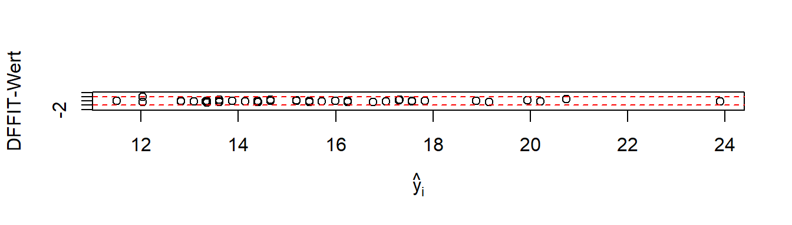
In Abbildung 7.1 sind die DFFITS-Werte gegen die vorhergesagten Werte \(\hat{y}_i\) abgetragen und zusätzlich die Daumenregel \(\pm1\) eingezeichnet. Hier ist ein Wert nur gerade so außerhalb des vorgeschlagenen Bereichs. Hier könnte daher sich dieser Datenpunkt noch einmal genauer angeschaut werden, ob bei Ausschluß des Wertes es zu einer qualitativ anderen Interpretation der Daten kommt oder ob bespielsweise Übertragungsfehler für diesen Wert vorliegen oder sonstige Gründe.
7.22 Cooks-Abstand
Ein Maß um den Einfluss von einzelnen Datenpunkten auf die Vorhersagewerte \(\hat{y}_i\) über alle Werte abzuschätzen.
\[ D_i = \frac{\sum_{j=1}^N(\hat{y_j} - \hat{y}_{j(i)})}{k\hat{\sigma}^2} \]
7.22.1 Daumenregel
\(D_i > 1\)
7.22.2 In R
cooks.distance()
7.23 Cooks-Abstand plot
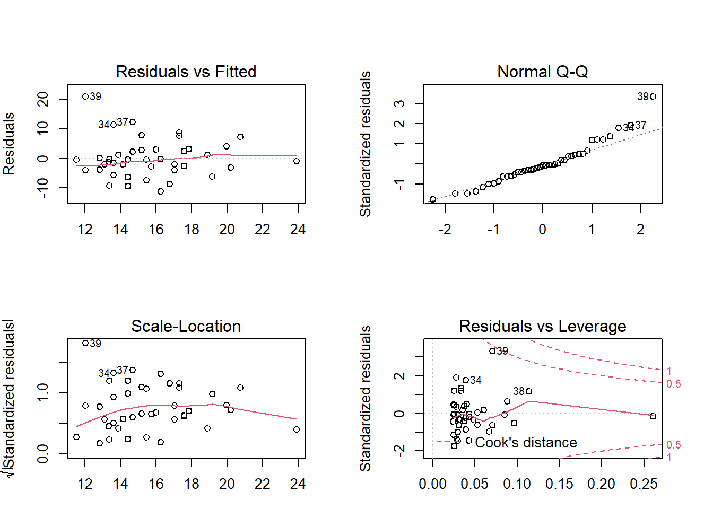
7.24 DFBETAS
Ein Maß für die Veränderung der \(\beta\)-Koeffizienten durch einzelne Datenpunkte \(i\).
\[ (DFBETAS)_{k(i)} = \frac{\hat{\beta}_k - \hat{\beta}_{k(i)}}{\sqrt{\hat{\sigma}^2c_{kk}}} \]
7.24.1 Daumenregel
Für kleine bis mittlere Datensätze \(\approx 1\)
Für große Datensätze \(\approx 2/\sqrt{N}\)
7.24.2 In R
dfbeta()3
7.25 DFBETAS
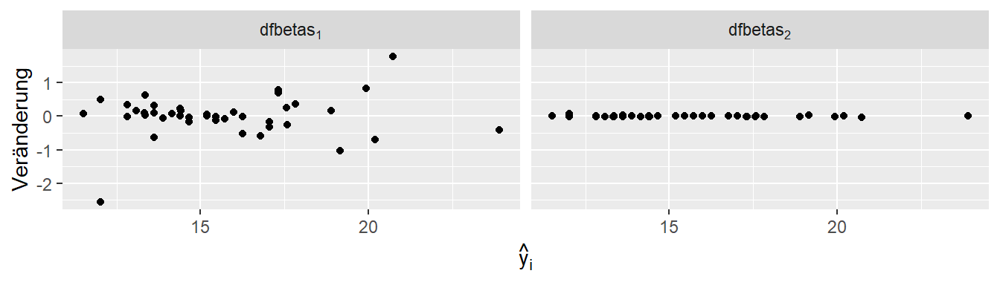
7.26 Zusammenfassung
| Typ | Veränderung | Daumenregel |
|---|---|---|
| \((DFFITS)_i\) | Vorhersagewert i | \(2\sqrt{k/N}\) |
| Cook | Durchschnittliche Vorhersagewerte | \(>1\) |
| \((DFBETAS)_{k(i)}\) | Koeffizient i | \(2\sqrt{N}\) |
| \(e_{Ti}\) | Residuum i | t-Verteilung(n-k-2) |
7.27 Diagnoseplots in R mit plot(mod)
plot(mod)
7.28 Zum Nacharbeiten
Altman und Krzywinski (2016a) Fox (2011, p.294–302)
7.28.1 Weiterführendes
Young (2019)